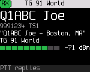
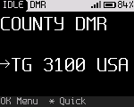

主屏幕
主屏幕一眼回答四个问题：你在哪里、PTT 会做什么、正在发生什么，以及电台是否正常。


区域，从上到下
| 区域 | 显示内容 |
|---|---|
| 状态行 | 左侧：状态（IDLE、RX、TX，发射被拒绝时为 NO TX；静噪打开时——包括监听——为 RX）、模式（DMR 或 FM）、扫描或监听开启时的 SCAN 或 MON，以及 USB 作为网卡时的 IP，电脑连接后其后带一个向上和一个向下箭头。右侧：按键锁定时为“L”，未读消息为“M”加数字，信号条、电池图标和电池百分比。彩色屏上该行用高亮色填充，文字为黑色（设置 > 显示 > 状态栏填充） |
| 位置 | 区域名称和信道在区域中的位置（“3/16”）。VFO 中：“VFO” |
| 信道 | 信道编号和名称，尽可能大。VFO 中：频率 |
| 通话目标 | “PTT→”以及 PTT 指向哪里。DMR：通话组或个人。FM：发射频率。回复窗口期间：“回复→”和倒计时 |
| 标签 | DMR：时隙、色码、功率。FM：亚音、带宽、功率、静噪级别 |
| 活动 | 空闲：最后听到的台站及多久以前，或“暂无通话记录”。接收或发射时：见下文 |
| 提示行 | 附近按键当前的作用 |
临时更改过的字段在主屏幕上用高亮色绘制，提示行显示“返回 撤销 长按 OK 保存”。

电池百分比在低电量警告级别（默认 15%）及以下时变为警告色。
提示行消息
提示行会随情况变化。返回 键的作用始终位于该行右端、按键上方。最常见的提示：
| 提示 | 含义 |
|---|---|
| OK 菜单 * 快速 # Joe | 常规提示。# 后面的名字是最近来电者。# 打开其操作 |
| 返回 撤销 长按 OK 保存 | 信道有临时更改 |
| # 主叫 返回 结束回复 | 回复窗口正在运行。PTT 应答最近呼叫 |
| 返回：信道通话组 | 当前使用了临时选择的通话目标（行较窄时显示“返回 默认目标”） |
| 数字监听 返回 关闭 | 数字监听已开启 |
| # 跳过 返回 停止扫描 | 扫描正在运行 |
| 无编解码器：语音关闭 | DMR 信道未合并编解码器 |
| 0-9 频率 * 快速 上/下 | 在 VFO 中 |
| 按键已锁：长按 * 解锁 | 按键已锁定（行较窄时显示“已锁：长按 * 解锁”） |
接收
DMR 呼叫期间，主屏幕显示呼叫者：
- 名称，来自你的联系人，否则来自电台频率中的 DMR ID 数据库；
- DMR ID 和时隙；
- 到达的通话者别名，除非关闭设置 > 通话与收听 > 显示主叫别名；
- 通话组，或“发给你的个呼”；
- 信号强度（DMR 中取最近 120 ms 的峰值，因此空时隙不会显示为下降）。


电台听到但不播放的呼叫会说明原因。原因有“其他通话组：不播放”（你不收听的组）、“已加密：不播放”和“无编解码器：语音关闭”。长按监听可收听其他通话组的呼叫。
FM 上，静噪打开时活动区域显示“接收中”，监听时显示“静噪打开”。
发射
按住 PTT 时，屏幕显示通话中、目标、时隙和色码（DMR）、通话时长和发射超时。DMR 显示为“0:07 / 3:00”，FM 显示为“剩余 2:53 / 3:00”。
DMR 上顶行说明呼叫类型：组呼为“TG 3100”，私密呼叫为“私密 3101234”。私密呼叫显示联系人名称，有空间时还显示其 ID。名称过长时保留名称、去掉 ID。


DMR 上屏幕可能先显示“等待”（电台等待空闲时隙）或“唤醒中继”。
电台在 DMR 上也会在没有 PTT 时发射：注册（ARS）、文本消息、位置、呼叫提示及其应答，以及来自 USB 或串口电脑的分组数据。此时状态行显示 TX，红色 LED 点亮，主屏幕显示“发送中”。电台接收的数据会在状态行显示 RX。
电台拒绝发射时，状态行显示 NO TX。屏幕说明原因，提示行说明该怎么做：
| 消息 | 原因 | 该怎么做 |
|---|---|---|
| 本信道仅接收 | 信道设为仅接收 | 换一个信道 |
| 超出…… | 频率超出电台的发射频段 | 换一个信道，或在 VFO 中调到该频段 |
| 达到发射超时 | 通话时间超过发射超时 | 松开 PTT 再按 |
| 未设置发射频率 | 信道没有发射频率 | 在电台频率中修正该信道 |
| 无编解码器：语音关闭 | DMR 语音缺少编解码器 | “用 rfoundry 添加编解码器”（安装） |
| 信道忙 | 时隙上有人在通话 | 等呼叫结束 |
| 中继台无应答 | 中继台未唤醒 | “检查色码和距离” |
| 热点模式：PTT 关闭 | 电台处于热点模式 | 按 OK 退出热点模式 |
| 电台频率中无 DMR ID | 电台频率没有 DMR ID | 在电台频率中设置你的 ID |
| DMR 调制解调器未运行 | DMR 芯片未启动 | 重启电台。见故障排查 |
| 调制解调器拒绝发送 | DMR 芯片拒绝了呼叫，或接受后 1.5 秒内没有发送 | “松开 PTT 再试”。若反复出现，重启电台 |
低电量和严重电量级别也会限制发射。见电池与供电。
大字体
设置 > 显示 > 大字体只显示状态行、信道名和通话目标，每项尽可能大。电台在关机后保留此设置，也会保留设置 > 显示 > 提示行。
